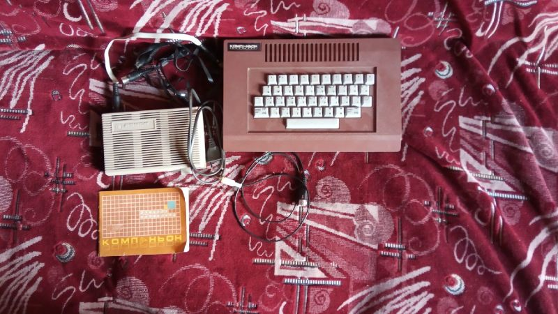

| Годы производства | Предположительно с 1989 г. |
| Производился | Производственное Объединение "Ижевский Механический Завод" |
| Процессор | Zilog Z80 |
| Частота | 4 МГц |
| Скорость | 105% |
| ОЗУ | 48КБ |
| ПЗУ | 16КБ |
| Преемущества | Стабильное качество картинки, удобная клавиатура, высокая совместимость с оригиналом, возможность писать на русском языке. |
| Недостатки | Отсутствие операторов на клавиатуре, вывод звука на внутренний динамик. |
Бытовой Компьютер Компаньон
Компаньон, или же официально Бытовой Компьютер "Компаньон" - отечественный клон ZX Spectrum 48k, произведенный производственным объединением Ижевский Механический Завод в г. Ижевск. Тираж неизвестен. Экземпляр представленный в нашем музее имеет номер 06920 и выпущен 7 февраля 1991 года, если судить по тех.паспорту, шедшему с компьютером в комплекте.Существует 5 моделей данного компьютера: Magic, Компаньон, Компаньон-М, Компаньон 2 и Компаньон 3.
В нашем случае мы рассматриваем нечастую версию - Компаньон.
Комплектация в нашем случае не полная, но какая есть на данный момент:
КомпьютерБлок питания
Мануал
Самодельный кабель для подключения (уже был при покупке, я его не доделывал)
4 кассеты
Основная информация:
В основе этого компьютера лежит схема раннего советского клона ZX под названием Балтик, которая с незначительными изменениями была перенесена сюда. Внутри используется оригинальный процессор Z80, но вполне допускаю что существуют версии этого же компьютера, где используются аналоги.Компьютер имеет оригинальный дизайн корпуса, с красивым сочетанием светло-серого и красно-коричневого оттенков. Используется пластиковая клавиатура с 41 клавишей, в данном случае расположение клавиш это классический QWERTY, а русская раскладка имеет не ЙЦУКЕН, а в данном случае это клавиатура с раскладкой ЯВЕРТ, которая по сути просто тот же КВЕРТИ но на русский манер.
На задней панели имеются следующие разъемы:
- Разъем для Джойстика (DIN7) - Это разъем джойстика типа Kempston.- Дальше идут две кнопки черного и красного цветов, которые по функционалу идентичны - аппаратный сброс. Однако одна из них предназначалась изначально вовсе не для сброса, но об этом дальше.
- RGB (DIN7) или же разъем для подключения к цветному телевизору.
- ЗП(DIN5) - Запись на магитофон
- ЧТ(DIN5) - Чтение с магнитофона
- БП(DIN7) - Блок питания.
С одной из сторон на компьютере имеется крупное прямоугольно отверстие, и оно наиболее интересно.
Дело в том, что разработчики вероятно планировали использовать подсоединяемые ПЗУ - фактически как игровой картридж для этого компьютера в качестве альтернативы магнитофону и именно для этого нужна была черная кнопка сброса на задней панели, она должна была запускать этот самый картридж. Но беда заключается в том, что массовое производство таковых наладить так и не удалось, и поэтому слот так и остался пустующим. Вопрос в том, а существовали ли таковые вообще остается открытым, потому как ни фотографий, ни каких либо свидетельств автор данного текста не видел.
А случае с Компаньоном-М, там имелся распаянный слот для вставления картриджей, а в случае с Компаньоном имеющимся в нашем музее - он просто отсутствует на плате, при этом щель осталась.
Прошивка данного компьютера изменена - при включении выводится текст (с)1990 КОМПАНЬОН V1.0 Есть поддержка русского языка, изменен шрифт - буквы немного отличаются от стандартных, и звук при нажатии клавиш также подвергся изменению.
Звук с данного компьютера выводится на встроенный динамик.
В комплекте имелся блок питания, который вероятнее всего не является родным для этого компьютера, т.к. дает большее напряжение и даже по клейму на корпусе блока имеет другой логотип. Тем не менее, компьютер спокойно работает с блоком питания от Ленинграда-1.
Руководство пользователя отпечатано в виде небольшой книжицы, в которой есть исключительно гарантийный талон с датой выпуска и ремонта, и краткое руководство пользования этого аппарата.
Видеокабель который был при покупке представлял из себя простейший АВ-провод с выводом изображения в Ч/Б цвете. Тем не менее качество картинки очень приличное для этого клона. По распиновке клон очевидно похож на РОБИ 48к, однако видимо расположение цветов иное, потому как я пробовал подключать кабель от РОБИ и изображение было цветное, но цвета были неправильные. Кабель с цветом еще обязательно будет сделан.
С собой также продавец прислал 4 кассеты с играми. Все были от фирмы ЭЛПО, это были сборники с определенными номерами:
11 - А: JoeBlade 2; Lancelot; Gladiator; Kirel; Motos; Moon Strike;DragonTorc; DrillerTanks B: Highway E.; Operation Gunship; Kikstart II; Siege; C.Tracer; Salamander; Victory Road; Street Gang 12 - A: Night Gunner; Cargo; Project F; Corsarios 2; K. Kanga; The Deep; T.Wiking B: Qvartet; Hyper; GrandPrix 2; NightShade; Atari Pole; Sai Combat 20 - A: Go Bang; Chucke; AAAARRGGHH; Power Boat; Gary Hot B: Puzznic; Pyjamarama; Dominoes; Freddy; Penetrator; Orbix 101 - A: Learn To Read 1; Learn To Read 2; Learn To Read 3: Learn To Read 4; Learn To Read 5; Pofs; Grammar; Opp 1-Opp2; Proverbs; Idioms; Group Term; Odd Word; B: Eng Rus; Astronomer; Sol seeker; Sunrise; Planet 1; Planet 2; M.Phase; Halley; AT 2000; Asmisc; Dav Int
Весьма неплохой набор, и последняя кассета тоже достаточно интересная, учитывая что она почти вся посвящена изучению английского языка, что довольно таки интересно.
Клон имеет достаточно высокую степень совместимости с оригинальными программами, большинство кассет и программ запускалось без проблем, хотя и бывали моменты ошибок.
В случае приобретения более полной версии данного компьютера - информация будет обновляться.
Ссылки:
На данный момент обзора на Ютубе всё еще нету, поскольку я его пока еще не снималЗапись в блоге об этом клоне соответственно тоже еще не писал.